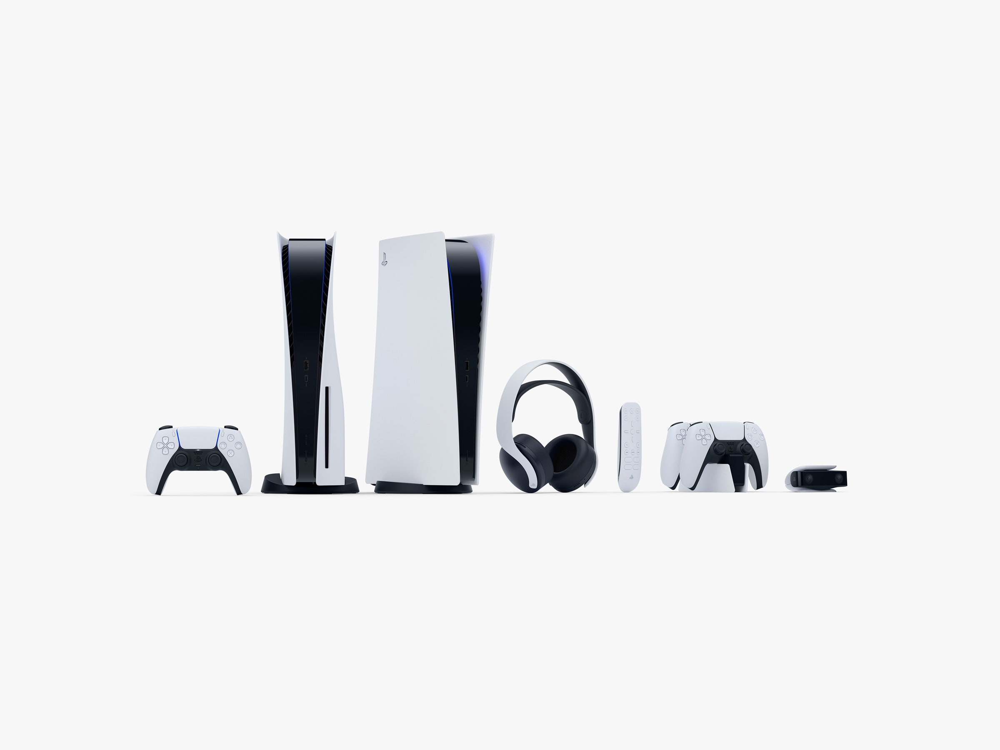

We finally saw Sony's new PS5 and the two consoles (plural!) are ... curvy.
In our dedicated Slack channel for Sony's PlayStation 5 event, WIRED staff spent an hour riffing on all of the new gameplay footage as it was revealed. We made fun of Returnal (what kind of title is that?!) and waxed poetic about the cyberpunk cats in Stray. Then, it happened. The unveiling. The grand finale. Our conversation switched to a chorus of "oohs," "aahs," and general intrigue about what we were all seeing: the first look at Sony's PlayStation 5 hardware.
We've known about the PS5 for a while now. We took an exclusive look back in October of 2019, and even further back, in April of last year, we knew the next-gen console would have support for ray tracing, as well as superfast load times thanks to the built-in solid-state drive.
What we didn't know is just how futuristic the design of the PlayStation 5 consoles would be. You read that correctly: consoles, plural. In addition to the standard PS5, there will be a digital-only version of the console that lacks a disc drive. If the new all-digital console is like the disc-less Microsoft Xbox One S, it may be a slightly more affordable model, but will lack the ability to play any physical media. We don't know if there are any differences in processing power or game storage space. Pricing for the consoles has not yet been announced.
The PlayStation 5 models are tall and curvy, and while the trailer did show a shot of the consoles laying horizontally, all other images so far have shown the console standing vertically. There appear to be heat dissipation vents on the top of the consoles as well, so an upright stance may be preferred. The PS5 Digital Edition is slightly slimmer. Both versions have only been shown with a stark white outer shell.
There are lots of opinions floating around the net regarding the PS5 design, but if you're sick of the same old rectangles being released year after year, you may enjoy what I'm affectionately calling the "hips" on Sony's newest addition—assuming they aren't fragile.
Sony plans for at least some backward compatibility, though it may not be as robust as the upcoming Xbox Series X's compatibility. There were also several mentions of ray tracing, something Microsoft's console will likely take advantage of as well.
Sony also showed some new accessories, including a headset, media remote, and the DualSense Controller, which features adaptive triggers and a built-in microphone. No release date is set yet, but we're expecting to see the PlayStation in November or December 2020. While you eagerly await your chance to preorder, take a look at the new PS5 games.